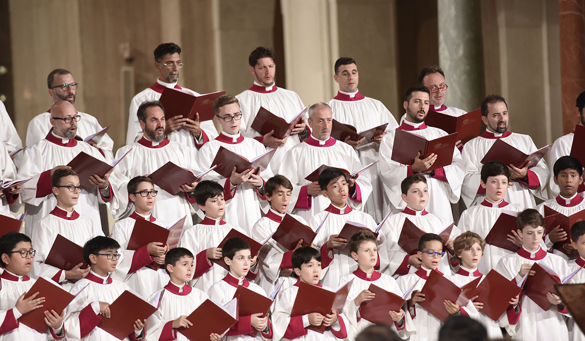
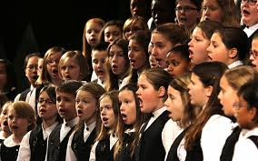

A choir is a musical ensemble of singers. Choral music, in turn, is the music written specifically for such an ensemble to perform. Choirs may perform music from the classical music repertoire, which spans from the Medieval era to the present, or popular music repertoire. Most choirs are led by a conductor, who leads the performances with arm and face gestures. A body of singers who perform together as a group is called a choir or chorus. The former term is very often applied to groups affiliated with a church (whether or not they actually occupy the choir) and the second to groups that perform in theatres or concert halls, but this distinction is far from rigid. Choirs may sing without instrumental accompaniment, with the accompaniment of a piano or pipe organ, with a small ensemble, or with a full orchestra of 70 to 100 musicians.
During the 2018-2019 school year, I decided that in order to finish my Fine Arts credits for my time at SLUH, I would join Conert Choir, one of the choir options here at SLUH. Since I started I have really enjoyed choir class, making it one of my favorite clases during my time in Highschool. On this website, you will view the history of choir itself, the history and choir options avaible at Saint Louis University Highschool, my previous experiences with choir during highschool, middle school, and even elementery school, and a few videos of my preformances. Please enjoy the time on this site!

Copyright 2018